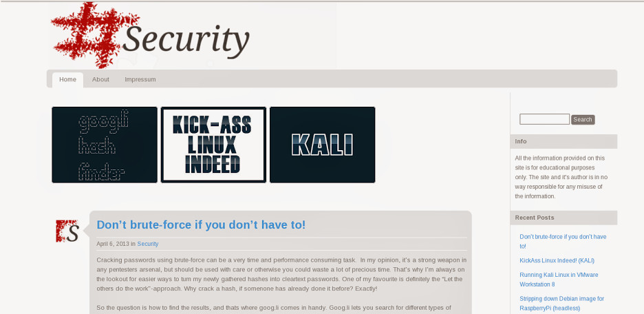
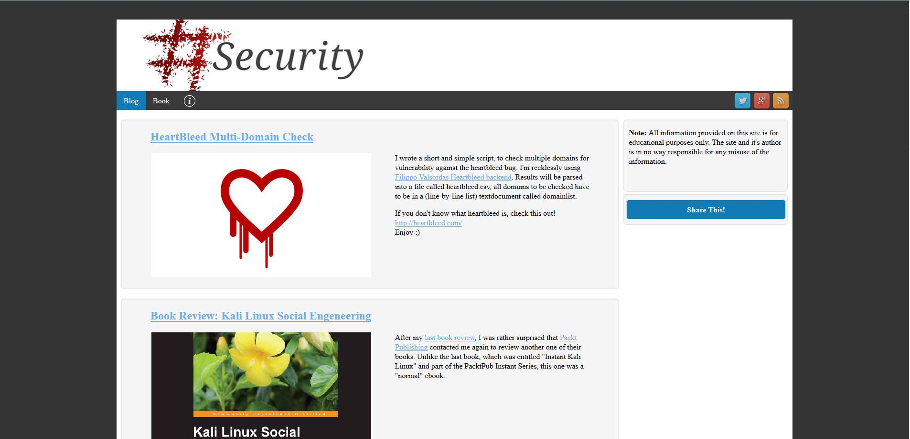
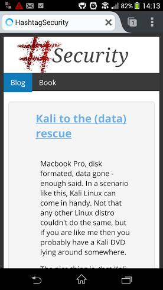
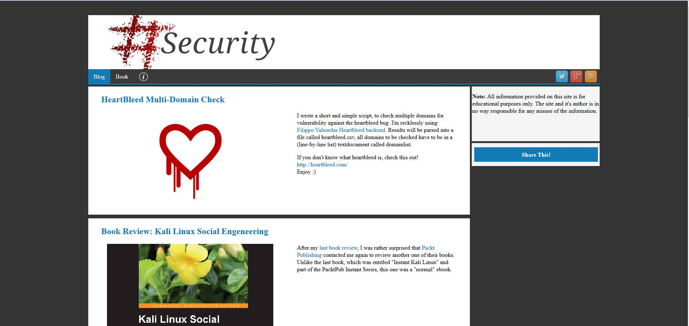
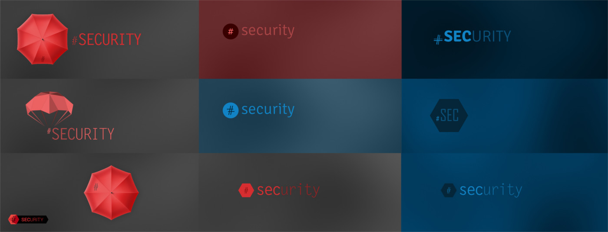
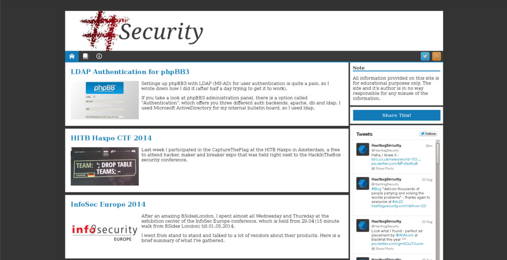

#Security in time
HashtagSecurity.com has gone a long way since it started over two years ago.
In the depths of my hard drive I found screenshots of older hashtagsecurity.com versions, so I decided to share them with you!
Back when I started it was a blog about pretty much everything that crossed my mind. Having it's roots in my first, now buried blog mohrphium.com which I started during my apprenticeship it wasn't soley focused on security. However, after I got my hands on the domain hashtagsecurity.com, I decided to leave the administration area and get more into infosec.
The first "logo" I created was done during a trainride on my tablet. I was playing with different brush settings on a new painting app and created a "#" that I thought would make a great logo for my new blog.
Original logo on my old wordpress blog:

I'm no designer, that's for sure - but still, I should have known better. After some time, even I noticed that the resolution was crappy, so I imported the jpg file in inkscape, created a svg off it and imported that into blender. Yes, I created my v.1.1 logo in a 3D moddeling application. That should give you a pretty good picture of how 1337 my design skills are.
Over time I rendered different logos, but the last one was this:

The logo was of course not the only thing that changed. In the beginning I often found my blog showing really old posts. It's the typical beginners blogging problem.
- Post - "There is not much here yet, but I'm gonna start writing soon"
- Post - "Sorry for not writing in such a long time, but it's gonna change real soon, promise"
Even though I didn't actually write it that way, the publishing dates speak for themselves.
I still have to force myself from time to time to publish posts, but all in all I got kind of a thing going now.
As every beginning blogger, I wondered if anyone was reading my blog at all. And I still do actually. That's why I added Google Analytics at one point. That was pretty much at the beginning, back when it was still running on wordpress. After Ghost came out, I switched to the nodejs powered new blogging platform and had so many new problems that tracking and analytics wasn't really on my mind anymore.
I tried a few themes but ended up writing my first crappy theme in html,css,js and ghost handles.

This was version 1.0, and it even came with a "mobile version" which only worked in a few browsers correctly as you can see here.

For a first try I thought it acceptable, when in fact it sucked quite much. So I rewrote the whole thing twice, and what you see today is actually v3.1.
Version 2.0 was my first complete rewrite, and though I stuck to the overall design, there was quite a huge change in the codebase.

The big rewrite not only improved my theme, but also my rudimentary CSS,HTML and JS skills allowing me to finally solve many problems with my mobile theme.
Between writing version 2.0 and 3.0 I again found myself wondering if anyone actually read my blog and started to thing about my objective. Why was I writing this stuff? And why was I publishing it for everyone to see? The short answer is, because I like to help people. I love finding the solution to a problem in minutes on somebodies blog and I always wanted to contribute to the open knowledge and source community. Realizing that, I noticed that it doesn't matter how many people read my blog. If it helped even just one person, the post was worth writing it.
I installed Kibana at one point to get a rough overview of visitors from my webservers access logs, but that's about it. I have no need for cookies, tracking or advertisement. The cookies that are created are because of the twitter panel on the right, and I'm not even sure if I'm going to keep that.
I enjoy a clean blog, and that means no ads, no tracking and no click marathons to get the information you want.
After all that, it seems that I found time to look at my logo again. And it's fair to say that I did not like it anymore. So I set out to the task of designing a new one. As I've mentioned before I'm no designer so it took me longer than I'm want to admit. Here are two of the ideas I had that I scribbled on a pink post-it.
Not much? That's because no matter at how many designs of hashtags I looked, I couldn't come up with something I liked.
Finally I fired up blender again and due to a lighting accident I came up with this.
This was actually the first logo I kind of liked. I showed it to a few of my colleagues and they said "Show it to the guys from the graphics department, they can surely give you some good feedback". Oh boy!
I showed it to Nick. He just shook his head and sent me some examples a few minutes later. I mashed them all together to get a better overview, but they where all in high resolution.

After a few mails back and forth, he came up with these two for twitter and one with "Security" instead of just "SEC" for the blog header.
I really liked the red version as well, but since the blog had a blue theme going, I sticked with it in the end. It was a tough decision though!
The new logo inspired me to write version 3.1 and change a few things on the theme. This is how the blog looked like a few days ago, still with the old structure and logo. It's the first minor version update, as it only takes on minor feature changes and overall design. The change from 2.0 to 3.0 had much bigger changes, such as "mobile first" and a complete rewrite of the CSS stylesheet.
For comparison, this is what the previous theme, so to say version 3.0 looked like.

It might not look that different from 2.0, but again there is quite a lot of code I ripped out and completely wrote new.
Of course it's not done yet and I'm always going to be changing it. But I hope at least now it's representable.
If you want to give me some feedback I would appreaciate it. Just put it in the comment section or tweet me @HashtagSecurity.